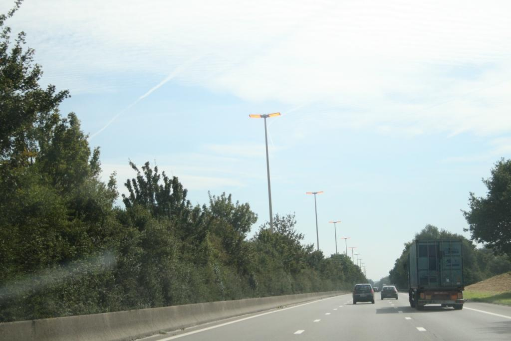

Naktiniai žibintai su įdomiu apšvietimu - sukurkite savo pasaką
- Mieli LED „Flamingo“ vienaragio naktiniai žibintai ...
Gintaro baldai naktiniai staliukai Jūsų miegamajam – vienas geriausių pasirinkimų, norintiems organizuoti patogią, jaukią, tvarkingą ir skoningą erdvę apie savo lovą, tačiau nenorintiems mokėti krūvos pinigų už naktinį staliuką.Gintarobaldai.lt svetainėje rasite modernaus ir klasikinio dizaino naktinių staliukų itin žema kaina. - Naktiniai staliukai | Gintaro baldai
Naktiniai žibintai. Naujos prekės Naujas geležies virtuvės ritininis popierinis rankšluosčių laikiklis tualetinio popieriaus laikiklis Audinių laikymo stovas Kabineto kabyklos lentynų virtuvės organizatorius EUR € 11.10 Išparduota. 2018 virtuvė Nešiojama pakabinamoji drenažo dėžė Nuleidimo lentynos krepšelis Vonios laikymo ... - Naktiniai žibintai ant akumuliatorių (29 nuotraukos ...
Ultravioletiniai prožektoriai ir žibintuvėliai. Ultravioletinis žibintuvėlis su savo UV šviesa padės jums atpažinti netikras kupiūras, padės gintaro paieškoje, žvejyboje flourescenciniais masalais, rasti skysčių nutekėjimą automobilyje ir kitose situacijose. - LED naktiniai žibintai (40 nuotraukų): vaikų medienos ...
LED naktiniai žibintai - tai ateities žibintai, kurių išskirtiniai bruožai yra išskirtinai ilgas tarnavimo laikas ir didelis funkcionalumas. Produktai plačiai naudojami miesto apartamentuose ir kaimo namuose, jie lengvai integruojami į šiuolaikinį interjerą. - Naktiniai žibintai - Internetinė Parduotuvė
Naktiniai žibintai - Geriausios kainos, greitas pristatymas, kokybės užtikrinimas! Ateikite ir pasirinkti. Mūsų parduotuvė laukia tavęs. - Naktiniai žibintai žmonių partijos Įvykiai tapetai ...
Prekės tipas: „Night LightsIs“ baterijos: Nenaudojama: „HolidayModel“ numeris: L3D478Sertifikacija: RoHS, ce, FCC, EMCPower Šaltinis: Sausi akumuliatoriai ... - Naktiniai naktiniai žibintai nuo drugelio prie lovos ...
Naktiniai žibintai ant baterijų - puikus pasirinkimas kūdikio kambariui. Stiprybės ir trūkumai. Vaikų naktiniai žibintai ant baterijų turi neabejotinų pranašumų, todėl jie yra paklausūs. Pagrindinis šio priedo privalumas yra jo saugumas. Jis gali dirbti visą naktį, o tėvai bus ramūs, kad jų kūdikis būtų visiškai apsaugotas. - Šviestuvai, Žibintai | Gintaro baldai internetu
Naktiniai staliukai, veidrodžiai (8) Lovos (27) Vaikų ir jaunuolių kambario baldai (46) Lentynos (8) Kabyklos (2) Komodos (8) Vaikiškos kėdės (55) Lovos (9) Komplektai (6) ... Žibintai, žvakidės, žvakės Puslapyje rodyti: Filtruoti: Grįžti atgal. Kaina. Filtruoti ... - Naktiniai žibintai (84 nuotraukos): naktinis lemputė ...
Kokie įdomūs naktinio apšvietimo modeliai šiandien? Pavyzdžiui, naktinis lemputė miegamajame su mėnulio forma su judesio jutikliu bus įdomus visiems ir taps namo akcentu. Suaugusiųjų lempos gali būti aprūpintos žadintuvu, o vaikams - vaiko verkimo funkcija. - 11 naktinių žibintų, kurie jūsų vaiko kambaryje atrodys ...
Naktiniai žibintai gali atrodyti kaip šiek tiek smulkūs, palyginti su visa kita, kas jums reikia, kad užbaigtumėte savo vaiko erdvę, bet jie taip pat yra labai svarbūs - jie daro vaikus jaustis patogiai tamsoje, o tai reiškia, kad jie gauna daug naudos. Taigi, jūs žinote, kad jūs taip pat galite padaryti kuo mielesnius.
Dažų Tipai Dirbkite Su Gruntais Putų Tipai Lithuanian Italian English Bulgarian Croatian Czech Danish Dutch Estonian Finnish French German Greek Hungarian Latvian Lithuanian Norwegian Polish Portuguese Romanian Serbian Slovak Slovenian Spanish Swedish Indonesian
Elektros įranga Ir Apšvietimas
Home Renovates Elektros įranga Ir Apšvietimas Naktiniai žibintai su įdomiu apšvietimu - sukurkite savo pasakąNaktiniai žibintai su įdomiu apšvietimu - sukurkite savo pasaką
O reguliariai registracija išspręsti keletą problemų iš karto: teikti pakankamą apšvietimą žmonių užkliūti baldai, ramus, kovoja su instinktyvus baimės tamsoje, mažina nemigą.Lemputė su įdomiu apšvietimu, be to, jos pagrindines funkcijas, atlieka daugiau dekoratyvinę vaidmenį, todėl tamsiai kambarį jaukiame kambaryje. Apšvietimo prietaisų pasirinkimas yra toks didelis, kad būtina aiškiai atskirti šviestuvus pagal jų funkcionalumą.
Naktį su įdomiais apšvietimas
Turinys straipsnis
1 pagrindinių tipų naktį šviesos 2 Secure nightlights - kaip atskirti juos 3 A Night Light įvairovė 3.1 LED Network naktiniai 3.2 nightlights optinių 3.3 Projektoriai 3.4 Touch lempa 3.5 Nešiojami naktiniai 4 Kaip pasirinkti naktinė 5 vaizdo pamoką teisingas pasirinkimas lempos su įdomi apšvietimopagrindinių tipų naktinė
pagrindinis uždavinys naktinis apšvietimas - suteiktipaslėpta šviesaTai žinoma, kad žmogaus akis mokinys naktį ir temstant labai išsiplėtė siekiant atskirti objektų kontūrus tamsoje. Dėl šios fiziologinės savybės į tinklainę patenka daugiau šviesos spindulių.Jei staiga įjungti ryškios šviesos, jis sukuria didžiulę naštą tinklainės ir regos nervo, kuris gali sukelti padidėjęs kraujospūdis, galvos skausmai ir nemiga.
Su aštriu ruožtu dėl ryškios šviesos sukuria spaudimą regos nervo
nightlights teikti silpnas ir išsklaidyti išėjimo šviesos ir lempos su įdomiu apšvietimu pridėti įspūdingas akcentais. Pagal energijos rūšis išskiriami savarankiški ir tinklo modeliai. Priklausomai nuo šviesos šaltinio, išskiriami šviesos diodų ir optinių skaidulų šviesos. Tie ir kiti gali sugadinti šviesą, mažai energijos suvartoti ir minimaliai šilumą.Dujinių išlydžio lempos ir kaitrinės lempos šiuolaikinėse nakties lempose nėra naudojamos dėl šių priežasčių:
didelės galios suvartojimas; galimybė šildyti žibinto korpusą, galimas gaisro pavojus; trumpa tarnavimo trukmė, nes abiejų tipų lempos netoleruoja dažnų išjungimų; ryški šviesa, neįmanoma reguliuoti intensyvumo; lempos kova ir kelia pavojų, ypač vaikų kambariuose.naktinė nenaudoja dujų išlydžio lempas ir kaitinamoji lempa
saugūs - kaip atskirti juos
Saugumas yra svarbus, ypač jei naktį šviesa su įdomiu apšvietimu bus įdiegta į darželį.Daugelis šiuolaikinių modelių leidžia manyti, kad vaikas tiesiogiai prijungtas prie prietaiso, nes žibintai yra daugiau kaip žaislai nei interjeras. Vaikų darželio saugaus nakties lemputė turi šias savybes:
veikia baterijose, naudoja mažą srovę; turi tvirtą korpusą, kurį vaikas negali išardyti ar sugadinti pats; bekvapė; šviečia tik pasklidus šviesai, apsaugant vaikų akių sveikatą.Pasirinkite naktinius žibintus tik su išsklaidyta šviesa
Be suaugusiųjų miegamajame ar koridoriuje tinkamų pavyzdžių, kad dirbti tinkle, tačiau jie turi būti pagaminti iš aplinkai nekenksmingų medžiagų ir gaminti tik išsklaidytą šviesą.
"Nightlights" asortimentas
Yra šimtai skirtingų naktinių lempučių modelių, tačiau juos galima suskirstyti į keletą grupių su panašiomis charakteristikomis.
LED lempos tinklas
Tokie įrenginiai yra kompaktiškas, veikia nuo tinklo, o energijos suvartojimas yra toks mažas, kad jūs galite pamiršti apie jį keletą dienų, o ne jaustis tuo pačiu metu viršijimo. Tokiuose prietaisuose šviesos diodai yra padengti dekoratyviniu dangčiu, kuris išsklaido šviesą įvairiais variantais. Yra modeliai, kuriuose kištukas yra prijungtas prie dekoratyvinio elemento, tai yra, nakties lemputė tiesiogiai apšviečia plotą priešais lizdą.Tai patogu, jei lizdas yra atvirame lauke ir netinka, jei jis yra paslėptas užuolaidomis ar baldais. Svarbus šių modelių pliusas yra labai silpnas ir išsklaidytas, miegamiesiems ir koridoriams šis variantas idealus.
LED lemputė tinklas
Naktį
optinių Šviesolaidinis apšvietimas yra laikoma viena iš saugiausių.Optinio pluošto naktiniai žiburiai su įdomiu apšvietimu sunaudoja mažiausią energijos kiekį, nes stiklo pluoštas, iš kurio gaminami pluoštai, gali šviesą praktiškai beveik prarasti ir išsklaidyti. Tokiuose nakties lempuose, kad būtų sukurtas ryškus diegimas, kartais tik vienas šviesos diodas yra pakankamas, jei kompozicija yra vienos spalvos.
Optinio pluošto pagalba yra sukurtos kriokliai, kaskados ir fejerverkai.Šviesos atspindi skirtingais kampais, patenka ant sienų, lubų ir užuolaidų.Spinduliai yra tokie minkšti ir silpni, kad jos apskritai nedirgina akių.Tokie įtaisai dažniausiai yra maitinami baterijomis, nes jų energijos suvartojimas yra mažas.
nightlights šviesolaidžių
Projektoriai
nightlights projektorius su įdomiu apšvietimu - tradicinis sprendimas vaikų kambariai. Skirtingai nuo optinio pluošto modelių, jų pagalba galite sukurti ne tik abstrakčius akcentus, bet ir visą istorijos kompozicijas. Labai populiarus yra "Žvaigždžių vėžlys" - naktiniai žibintai, kuriuos sudaro minkštas žaislas su įmontuotu projektoriaus žibintu.Šio prietaiso korpusas pagamintas iš lengvo ir stipraus anglies pluošto sustiprinto plastiko, kuris nešildo, nesukuria kvapo ir nesulūžo.
Populiariausi projektorių sklypai yra žvaigždės ir kosmoso motyvai, vaivorykštė, gėlių motyvai. Renkantis projektoriaus lemputę, turėtumėte atkreipti dėmesį į spalvų schemą, suteikiant pirmenybę baltos, mėlynos ir žalios spalvos atspalvių.
nightlights projektorius lempos
Touch Jutikliai - iš daviklių, kurie gali skaityti informaciją apie aplinką sistema. Su tokiais prietaisais įrengti šviestuvai patys nustato apšvietimo laipsnį, kai kuriuose yra judesio jutikliai ir tinkamu momentu įjungiami. Yra kontaktiniai modeliai, kuriuos sukelia lietis.
Touch lempa įrengta judesio davikliai
Nešiojami naktiniai
mobilių šaltinių šviesos naudinga daugiausia jaunų tėvų, kurie yra priversti keliauti naktį iš kambario į virtuvę ir vonios kambarį.Kompaktiškas ir saugus nešiojamas naktinis lemputė nenaudos pagrindinės šviesos, kuri neleidžia suaugusiesiems miegoti ir sutrikdo kūdikio dienos režimą.Mažiausia paprastai miega puikiai tamsoje, kūdikiams nereikia šviesos šaltinių, bet mamos juos įvertins.
Nešiojamieji naktiniai žiburiai bus tinka tėvams
Kaip pasirinkti nakties šviesą
Light visada vaidino lemiamą vaidmenį suvokiant interjerą, naktį jis nepasiduoda. Pasirinkdami tinkamą nakties šviesą, galite pamiršti apie daugybę nepatogumų ir nepagrįstų baimes. Taigi trys pagrindiniai šviestuvų parinkimo kriterijai:
medžiagų ir konstrukcijų sauga apskritai, tai patvirtina vizualinis patikrinimas ir gaminio techninio paso buvimas; teisingas spektras ir difuzoriaus buvimas, kad naktinio šviesos šaltinis sukurtų patogias miego sąlygas; atitikimas tikslui, ergonomiška forma ir dizainas.Video pamoka apie tinkamą nakties apšvietimo pasirinkimą su įdomiu apšvietimu
11 Jun
LED lempos 220V lempos davikliai: pasirinkimas, kaina ir prekės ženklo apžvalga
99 023 Mar
Maitinimo šaltinis LED juostos 12V
72 018 Mar
Elektros instaliacija mediniame name su savo rankomis: žingsnis po žingsnio instrukcija
97 0Home Renovates © 2020 All Right Reserved
